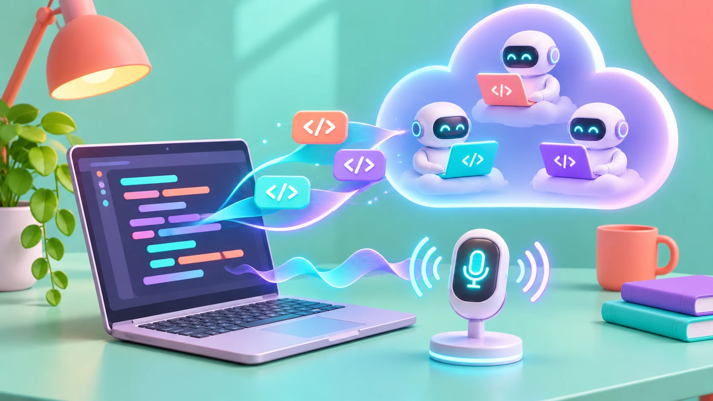

Software · Field note 065
Antigravity adds cloud agents and spoken requests
Google’s development app update brings remote work sessions and a Gemini Live voice mode.

Google’s Antigravity update adds Remote Agents and Voice Mode, alongside a redesigned conversation page, 9to5Google reported November 6. Google’s changelog dates version 2.29 to November 3 and says availability is gradual.
Remote Agents are rolling out to paid Google AI Pro and Ultra subscribers. Projects can use a GitHub repository or Google Drive folder, with work running in isolated cloud environments that continue after the laptop closes.
A phone-accessible remote interface lets users check on those sessions. Voice Mode uses Gemini Live to pass spoken requests to the agent, with adjustable voice speed.
Version 2.29 also moves the conversation prompt box to the bottom and combines branch and Git worktree selection for single-repository projects.